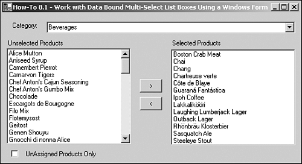

Note
If you check the Unassigned Products Only check box when you're first getting into Northwind and running this example, you probably won't see unassigned items. You will need to unselect products from a category. |
It is common to have to assign products to categories, which is a one-to-many relationship. Sometimes you want to be able to do this in a somewhat bulk fashion. One of the methods that works well is using the ListBox control. Using the ListBox control for single selections is no big deal, but when it comes to using it in a multi-select method, it starts getting trickier. This How-To shows you how to create an intuitive interface for assigning products to categories using a couple of multi-select list boxes on a Windows Form.
You can assign a category to each product, but you would like to have a method of maintaining all the products for a category at one time. How do you take advantage of a multi-select list box to perform this task?
Using the ListBox control in regular single selection mode is as straightforward in .NET as in prior versions of Visual Basic. The same can be said in the case of using the multi-select mode of list boxes. It is as confusing in .NET as it was in prior versions.
Using the ListBox control in single entry mode is pretty straightforward. You just need to use the SelectedItem property with the index of 0. However, if you want to use the ListBox control in multi-select mode, then you must perform some more work and access some other properties (see Table 8.1).
|
Property/Object |
Description |
|---|---|
|
SelectionMode |
Property of the ListBox control. The settings for this are None, One, MultiSimple, or MultiExtended. |
|
SelectedIndices (index) |
A collection of the ListBox control, this returns the indices (location in the list) of all the selected items. |
|
SelectedIndices.Count |
Property of the ListBox control. A count of the number of items selected in the list box. |
|
DataRowView |
Object type that the data provider provides. |
|
Items (index) |
A collection of the ListBox control. Returns a DataRowView type object. If you have multiple columns, they are also returned in the DataRowView object. |
Open and run the VB.NET -Chapter 8 solution. From the main Windows Form, click on the command button with the caption How-To 8.1. You will then see the form displayed in Figure 8.2.

When the form loads, you will see the Beverages category chosen in the top combo box. The Selected and Unselected Products ListBox controls are filled in with the appropriate products. If you click on a product in the Unselected Products list box and then click on the arrow button pointing to the right (>), then the item is moved to the Selected Products list box. If you select items in the Selected Products list box and click on the arrow button pointing to the left (<), those items are moved to the Unselected Products list box.
If you click on the Unassigned Products Only check box located at the bottom of the form, then the Unselected Products list box is filled with products that are not assigned to any category.
Note
If you check the Unassigned Products Only check box when you're first getting into Northwind and running this example, you probably won't see unassigned items. You will need to unselect products from a category. |
Create a Windows Form. Then place the controls shown in Figure 8.2 with the following properties set in Table 8.2.
|
Object |
Property |
Setting |
|---|---|---|
|
Label |
Text |
Category |
|
ComboBox |
Name |
cboCategories |
|
Label |
Text |
Unselected Products |
|
ListBox |
Name |
lstUnSelected |
|
SelectionMode |
MultiSimple |
|
|
Label |
Text |
Selected Products |
|
ListBox |
Name |
lstSelected |
|
SelectionMode |
MultiSimple |
|
|
Command Button |
Name |
btnSelect |
|
Text |
> |
|
|
Command Button |
Name |
btnUnSelect |
|
Text |
< |
|
|
CheckBox |
Name |
chkUnAssignedOnly |
|
Text |
UnAssigned Products Only |
As with some of the other chapters' projects, before creating the code that will be attached to the Load event of the form, you need to create a support routine to create the Connection string. Called BuildCnnStr, the function can been seen in Listing 8.1. This function takes a server and database names passed to it and creates a connection string.
Function BuildCnnStr(ByVal strServer As String,
ByVal strDatabase As String) As String
Dim strTemp As String
strTemp = "Provider=SQLOleDB; Data Source=" & strServer & ";"
strTemp &= "Initial Catalog=" & strDatabase & ";"
strTemp &= "Integrated Security=SSPI"
Return strTemp
End Function
Although you could create a routine that would pass back a Connection object, a more versatile method would be to pass back a string. Some objects ask you for a Connection object, but others just ask for a string. You will see BuildCnnStr called in the next step.
On the form, add the code in Listing 8.2 to the Load event. In this code, you will start off by creating a data adapter called odaCategories and loading the category's SQL Statement into it. The dtCategories data table is then filled and set as the DataSource property of cboCategories. The DisplayMember and ValueMember of cboCategories are then set. Finally, two new subroutines called LoadUnSelectedProducts and LoadSelectedProducts are called to populate the appropriate list boxes. These routines are discussed in the next two steps.
Private Sub frmHowTo8_1_Load(ByVal sender As Object,
ByVal e As System.EventArgs) Handles MyBase.Load
Dim odaCategories As OleDb.OleDbDataAdapter
Dim dtCategories As New data table()
'-- Load the Categories combo box up first
odaCategories = New _
OleDb.OleDbDataAdapter( _
"Select CategoryID, CategoryName From Categories",
(BuildCnnStr("(local)", "Northwind")))
odaCategories.Fill(dtCategories)
Me.cboCategories.DataSource = dtCategories
Me.cboCategories.DisplayMember = "CategoryName"
Me.cboCategories.ValueMember = "CategoryID"
'-- Load each of the product list boxes based on the selected category.
LoadUnSelectedProducts()
LoadSelectedProducts()
End Sub
Create the LoadUnSelectedProducts routine by entering the code shown in Listing 8.3 into the form you created for this example. This routine starts off by testing the check box called chkUnAssignedOnly. Based on that value, a SQL string is created that grabs the products that are not assigned to any product, if chkUnAssignedOnly = True. All products that are not assigned to the chosen category are retrieved. The SQL String is stored in the variable called strSQL. Next, the DataAdapter object called odaUnselected is set to strSQL and the SQL Server connection string. The DataTable object called dtUnSelected is then filled and assigned to the list box called lstUnSelected. The DisplayMember and ValueMember properties are then set. Last, the ClearSelected method is called to make sure no entries remain selected.
Sub LoadUnSelectedProducts()
Dim odaUnSelected As OleDb.OleDbDataAdapter
Dim dtUnSelected As New DataTable()
Dim strSQL As String
'-- If the check box for Unassigned Only is checked, then
' grab the product items where the category is null; otherwise, load
' it up with those products not assigned to the current category.
If chkUnAssignedOnly.Checked Then
strSQL = "Select ProductID, ProductName From Products " & _ "
Where CategoryID IS NULL Order By ProductName"
Else
strSQL = "Select ProductID, ProductName From Products " & _
"Where CategoryID <> " & _
Me.cboCategories.SelectedItem(0) &
" Or CategoryID IS NULL Order By ProductName"
End If
'-- Pretty well same old, same old here. Create a data adapter
' and fill the dataset.
' Next, bind it to the list box.
odaUnSelected = New OleDb.OleDbDataAdapter(strSQL,
(BuildCnnStr("(local)", "Northwind")))
odaUnSelected.Fill(dtUnSelected)
Me.lstUnSelected.DataSource = dtUnSelected
Me.lstUnSelected.DisplayMember = "ProductName"
Me.lstUnSelected.ValueMember = "ProductID"
Me.lstUnSelected.ClearSelected()
End Sub
Create the LoadSelectedProducts routine by entering the code in Listing 8.4 into the form you created for this tutorial. This routine performs basically the same tasks that the routine listed in the previous step does, except that it performs the tasks using the lstSelected ListBox control. It also doesn't need to test the CheckBox control.
Sub LoadSelectedProducts()
Dim odaSelected As OleDb.OleDbDataAdapter
Dim dtSelected As New DataTable()
Dim strSQL As String
'-- Load the products assigned to this category.
strSQL = _
"Select ProductID, ProductName From Products Where CategoryID = " &
Me.cboCategories.SelectedItem(0) & " Order By
ProductName"
odaSelected = New _
OleDb.OleDbDataAdapter(strSQL, (BuildCnnStr("(local)",
"Northwind")))
odaSelected.Fill(dtSelected)
Me.lstSelected.DataSource = dtSelected
Me.lstSelected.DisplayMember = "ProductName"
Me.lstSelected.ValueMember = "ProductID"
Me.lstSelected.ClearSelected()
End Sub
Add the code in Listing 8.5 to the SelectedIndexChanged event of the cboCategories combo box.
Private Sub cboCategories_SelectedIndexChanged(ByVal sender As System.Object,
ByVal e As System.EventArgs) Handles cboCategories.SelectedIndexChanged
'-- Load each of the product list boxes based on the selected category.
LoadUnSelectedProducts()
LoadSelectedProducts()
End Sub
Add the code in Listing 8.6 to the CheckChanged event of the chkUnAssignedOnly check box.
Private Sub chkUnAssignedOnly_CheckedChanged(ByVal sender As System.Object,
ByVal e As System.EventArgs) Handles chkUnAssignedOnly.CheckedChanged
LoadUnSelectedProducts()
End Sub
Add the code in Listing 8.7 to the Click event of the btnSelect command button. This and the next step contain the most code as well as some new objects and properties. The first thing that happens is that the number of highlighted items (SelectedIndices.Count) is stored to an Integer variable called intItemsNum. One is subtracted from the figure because the collections in .NET are zero based.
Next, the code iterates through the SelectedItems collection of the lstUnSelected list box, and using the indices in that collection, the code accesses selected items. The type of object derived from the Items collection is the DataRowView object, mentioned in the "Techniques" section of this example. These items are then added to a string variable called strItems, which is then used to create the criteria for an IN clause of a SQL Update statement. This statement is passed to the Command object called ocmdSelect. This Command object is then executed, and the selected products are updated to reflect the category chosen. Last, the list boxes are reloaded to reflect the changes.
Private Sub btnSelect_Click(ByVal sender As System.Object,
ByVal e As System.EventArgs) Handles btnSelect.Click
Dim intItemsNum As Integer
Dim intCurr As Integer
Dim strItems As String
Dim drv As DataRowView
'-- Grab the number of selected items for the products
' unselected list box.
intItemsNum = Me.lstUnSelected.SelectedIndices.Count - 1
'-- Iterate through each of the items and create a string.
For intCurr = 0 To intItemsNum
If Len(strItems) > 0 Then
strItems = strItems & ", "
End If
drv = Me.lstUnSelected.Items(Me.lstUnSelected. _
SelectedIndices(intCurr))
strItems = strItems & CType(drv(0), String)
Next
'-- Run an update query to assign the category to the desired products
'-- using an IN clause in the SQL statement
Try
Dim ocnn As New OleDb.OleDbConnection(BuildCnnStr("(local)",
"Northwind"))
Dim ocmdSelect As New _
OleDb.OleDbCommand("Update Products Set CategoryID = " &
Me.cboCategories.SelectedItem(0) & _
" Where ProductID IN (" & strItems & ")", ocnn)
ocmdSelect.CommandType = CommandType.Text
ocnn.Open()
ocmdSelect.ExecuteNonQuery()
Catch excpCommand As Exception
MessageBox.Show(excpCommand.Message)
End Try
LoadUnSelectedProducts()
LoadSelectedProducts()
End Sub
Add the code in Listing 8.8 to the Click event of the btnUnSelect command button. Again, this code is similar to the previous step, but it is used to set the CategoryID column to null if the product was highlighted in the lstSelected list box and btnUnSelect was clicked.
Private Sub btnUnSelect_Click(ByVal sender As System.Object,
ByVal e As System.EventArgs) Handles btnUnSelect.Click
Dim intItemsNum As Integer
Dim intCurr As Integer
Dim strItems As String
Dim drv As DataRowView
'-- Grab the number of selected items for the products
' selected list box.
intItemsNum = Me.lstSelected.SelectedIndices.Count - 1
'-- Iterate through each of the items and create a string.
For intCurr = 0 To intItemsNum
If Len(strItems) > 0 Then
strItems = strItems & ", "
End If
drv = Me.lstSelected.Items(Me.lstSelected.SelectedIndices(intCurr))
strItems = strItems & CType(drv(0), String)
Next
Try
Dim ocnn As New OleDb.OleDbConnection(BuildCnnStr("(local)", _
"Northwind"))
Dim ocmdUnSelect As New OleDb.OleDbCommand(
"Update Products Set CategoryID = Null Where ProductID IN ("
& strItems & ")", ocnn)
ocmdUnSelect.CommandType = CommandType.Text
ocnn.Open()
ocmdUnSelect.ExecuteNonQuery()
Catch excpCommand As Exception
MessageBox.Show(excpCommand.Message)
End Try
LoadUnSelectedProducts()
LoadSelectedProducts()
End Sub
When the user chooses a category, the appropriate items are loaded into the two list boxes; unselected items are placed in the list box on the left, and selected items are placed in the list box on the right.
If the check box is selected, then only those items that are not currently assigned to a category are displayed in the list box on the left, which is titled Unselected Products.
When the btnSelect button is clicked, any items highlighted in the lstUnSelected list box are used in a query that updates the server with the new category they now belong to. Similarly, when the btnUnSelect is clicked, items in the lstSelected list box are used in a query that updates the CategoryID of the products to null.
This example is not the smartest to create in real life because you want products to be assigned to a category. However, this example does a good job of showing the properties and methods you can use to work with the multi-select features of the ListBox control.
For examples of using this same basic technique in a Web Form, check out example 8.5.